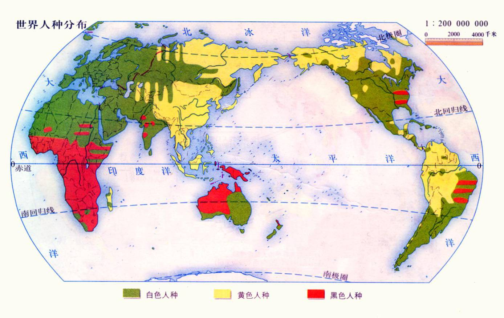
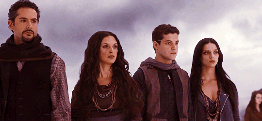
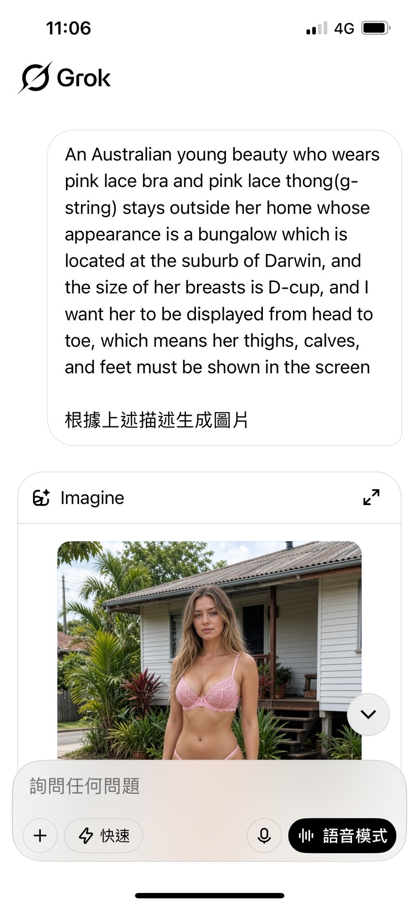
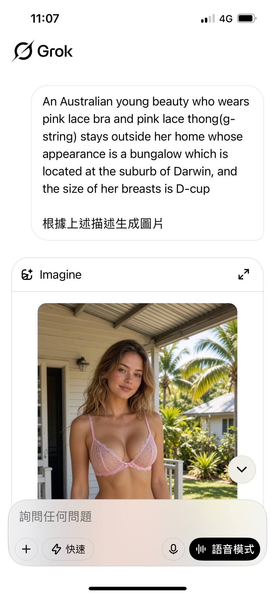
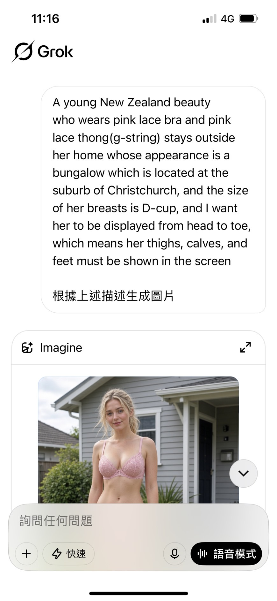
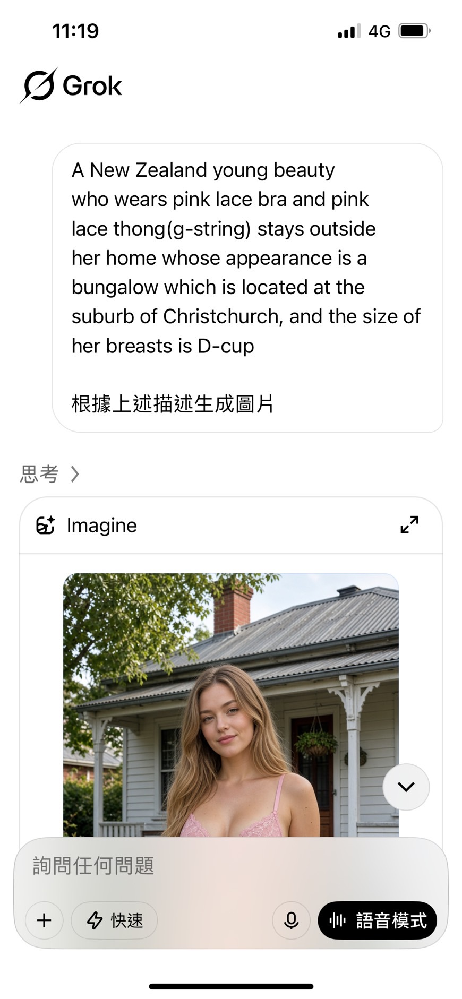

作者：周彥廷
創作日期：2025 年 9 月 5 日（2026 年深度架構重構）

點擊上方的語言選單以切換語言
index.html？index.html 的預設索引檔案（Index File）。這已成為全球前端開發者與網站託管服務共同遵循的標準規範。
【世界人種分布概括】
當今地球上的人類族群格局，並非靜止不變的分類標籤，而是歷經數萬年氣候環境適應（如緯度與紫外線導致的膚色演化）、大規模歷史遷徙（如印歐語系雅利安人東征、冰河期穿越白令陸橋）以及近代殖民貿易與族群融合交織而成的動態網絡。從高加索人種在南亞與中東的地理延伸，到歐亞交匯帶（中亞與新疆）的基因融合，人類的生理特徵深度紀錄著地球的地理歷史。
【對「遊戲開發」與「影視文化」的關鍵影響】
掌握真實的人種歷史與地理分布，對於當代數位遊戲開發（Game Development）與影視作品創作（Film & TV Production）具備極高的實用價值與審美意義：
閱覽本站 18 個子模組時，讀者會發現「高加索人群（Caucasian）的體質與符號解構佔據最多篇幅，東亞人群（East Asian）居次，而美洲原住民、南島語族、澳美人種與尼格羅人種則相對精簡，且不另闢獨立專題」。這並非取材失衡，而是基於商業文化工業的現實受眾結構與審美消費市場的客觀現況：
世界人種的巨觀分佈，是在冰河時期晚期至全新世定型的大規模地緣演化結果。下圖呈現傳統體質人類學上的三大原生分佈帶：

顏色標記與地圖除錯說明：綠色（廣義高加索人種，含歐洲、北非、西亞與北印度）、黃色（蒙古人種／東亞、南島語族北支及美洲原住民先民）、紅色（傳統地圖將撒哈拉以南非洲尼格羅人種，與大洋洲澳美人種／澳洲原住民、美拉尼西亞人及部分南印度人群一併標為紅色）。這張古典地圖不僅揭示了高加索人種橫跨歐亞非三洲的連續版圖，也反映出早期分類學僅憑表層膚色將大洋洲原住民與非洲黑人合併的歷史局限（現代基因測序已證實兩者為各自獨立的古老演化分支）。
現代演化生物學與分子人類學證實，人類群體的外貌差異由四大不可分割的動力共同推動：
SLC24A5、HERC2/OCA2），以便在微弱陽光下高效合成維持骨骼健康所必需的維生素 D。
美洲原住民（印第安人）在傳統分類中常被粗略歸為黃種人。分子遺傳學與古 DNA 研究證實，其祖先在末次盛冰期源自古東北亞／東亞先民（Ancient Northern East Asian），於約 2 萬年前經由白令陸橋（Beringia）進入北美，並在冰川消退後迅速擴散至中南美洲。他們完整保留了東亞人群的骨相特徵（如高鏟形門齒、平緩鼻根、內眥贅皮）。
近代自 1492 年哥倫布抵達後，西班牙、葡萄牙、英國殖民者以及數百萬非洲黑奴的湧入，使今日拉丁美洲形成了獨特的麥士蒂索人（Mestizo，歐印混血）、穆拉托人（Mulatto，歐非混血）等多元社會結構。
從美國官方人口普查（OMB）法規與體質人類學來看，北非（埃及、利比亞、阿爾及利亞、摩洛哥等）的原住民與西亞、歐洲同樣屬於白色人種（高加索人種）。巨大的撒哈拉沙漠自古以來形成了天然的生態隔離屏障，使得北非人（如柏柏爾人、古埃及後裔）在解剖學骨骼幾何（高狹鼻梁、深邃眼眶縱深）上與撒哈拉以南非洲人群有著根本性的演化區別。
這種真實的地理人種特性常被體現在具備考據意識的影視作品中：例如在電影《暮光之城》中登場的「埃及吸血鬼家族」（成員 Amun、Kebi、Benjamin 等），劇組便特意挑選具備中東或地中海血統、擁有深色頭髮與深邃骨相的白人演員飾演；知名創作者「非典牧師」利用 AI 還原古代埃及聖經人物時，亦展現出標準高加索面相與健康小麥肌膚，破除了現代流行文化常將北非與黑人混淆的刻板印象。
▲ 歷史視覺還原：知名創作者「非典牧師」以 AI 還原之古埃及聖經人物——深邃立體的高加索骨相與自然小麥肌膚

▲ 《暮光之城：破曉》埃及家族選角：劇組選用具備地中海／西亞血統之深髮立體面孔演員，貼合北非高加索歷史骨相
撒哈拉以南非洲是智人（Homo sapiens）走出非洲的演化發源地。為適應熱帶赤道強烈的紫外線輻射，該地區人群保留了高密度的真黑素深色皮膚、緊密捲曲的毛髮（隔熱透氣）與寬平的鼻翼（加速散熱）。現代群體遺傳學實證：非洲大陸內部的基因多樣性，遠大於非洲以外全世界所有人類群體的總和。
歐洲白人絕非單一的「金髮碧眼」。其人群本質上是由三股古代祖源混合而成：西方狩獵採集者（WHG）、早期歐洲農民（EEF，來自安納托利亞的黑髮高加索人群）以及青銅時代東歐草原牧民（Yamnaya）。南部地中海（義大利、西班牙、希臘）以深黑髮、深瞳孔與橄欖小麥肌為多數；中部阿爾卑斯呈現栗褐髮；唯有在低日照的西北歐，金髮與淺色瞳孔才佔有較高比例。
東亞人群在適應東亞溫帶季風與寒冷乾燥環境中，演化出了特有的脂肪墊眼瞼（防風沙）、平緩鼻根、內眥贅皮與高反射率的細膩皮膚。由於緯度偏高且季風氣候冬季漫長，中北部東亞人（中國北方、南韓、日本）普遍擁有原生極度白皙通透的肌膚，在物理色度上與歐洲白人無異，徹底瓦解了西方偽科學將東亞人貼上「黃皮」標籤的政治編造。
而在東南亞與太平洋板塊，則存在著兩大截然不同卻又在歷史上深度交匯的群體：首先是距今約 5 萬至 6 萬年前便率先離開非洲、沿著印度洋海岸線渡海定居大洋洲的澳美人種（Australo-Melanesians，包含澳洲原住民、巴布亞與美拉尼西亞原住民）——他們並非近代非洲移民，其血緣系統樹與歐亞人群的親緣甚至比跟非洲尼格羅人更近，且所羅門群島原住民更因獨立的 TYRP1 基因突變（完全不同於歐洲人的 KITLG 基因），演化出「深黑皮膚搭配先天亮金色頭髮」的平行演化奇蹟；其次則是約 5,000 年前發源於華南沿海與台灣的南島語族（Austronesians），其北支（台灣原住民、菲律賓北部）保留了較純正的古東亞南方基底，而向東南航向大洋洲的波利尼西亞支系（如薩摩亞人、紐西蘭毛利人）則與美拉尼西亞澳美人種深度融合，演化出高大魁梧的體格與古銅膚色。
【流行文化與 AI 演算法中的大洋洲原住民邊緣化實證】
儘管澳洲原住民與紐西蘭毛利人擁有數萬年至數千年的獨立演化史，但在近兩百年歐洲殖民人口置換與好萊塢商業輸出下，他們在現代大眾與 AI 演算法的認知中已嚴重邊緣化為「視覺幽靈」：
🔬 AI 演算法預設認知實證：澳洲（達爾文）與紐西蘭（基督城）零族裔限制盲測
以下 8 張截圖分為「輸入提示詞紀錄（截圖顯示 Prompt 僅指定地域與服裝，完全無種族描述）」與「完整生成結果（展示未裁切之完整視覺輸出）」兩兩對照。即便達爾文市是全澳洲原住民比例最高的首府城市，演算法依然 100% 預設輸出歐裔白人模板：

圖一（澳洲盲測 A－指令）：提示詞僅寫 Australian young beauty... suburb of Darwin，無任何膚色或族裔限制。
圖二（澳洲盲測 A－完整輸出）：未裁切完整畫面，系統直接收斂為金棕長髮的歐裔白人女性。

圖三（澳洲盲測 B－指令）：第二次測試同樣僅限定達爾文市郊區平房背景。
圖四（澳洲盲測 B－完整輸出）：完整畫面依舊 100% 輸出歐裔面孔與金棕色波浪髮型，原生澳美人種完全缺席。

圖五（紐西蘭盲測 A－指令）：提示詞僅寫 young New Zealand beauty... suburb of Christchurch。
圖六（紐西蘭盲測 A－完整輸出）：完整畫面自動生成金髮碧眼歐裔白人，毛利人特徵零檢出。

圖七（紐西蘭盲測 B－指令）：第二次測試紐西蘭基督城郊區場景。
圖八（紐西蘭盲測 B－完整輸出）：完整畫面再次驗證「紐西蘭人＝歐裔白人」的演算法絕對壟斷。
約公元前 2000 年至 1500 年間，源自中亞草原的印-伊朗語族（Indo-Iranian，即歷史上的雅利安人）跨越興都庫什山脈遷入印度次大陸，帶來了早期吠陀文化與印歐語系梵語。哈佛大學分子遺傳學家大衛·賴希（David Reich）團隊的研究證實，現代南亞人群體內普遍存在兩大古代基因核心：
這段地緣遷徙實證了：現代多數印度人高挺的鼻梁與深邃的眼窩，完全承襲自高加索印歐祖源；其較深的皮膚色調，則是數千年來在南亞熱帶烈日下產生的保護性適應，骨相與非洲黑人截然不同。
中亞自古即是東西方文明與人種的大熔爐。青銅時代早期，中亞主要由操印歐語系的東伊朗語族、吐火羅人（如塔里木盆地古乾屍）等高加索人群佔據；公元 6 世紀之後，突厥語民族興起、西突厥汗國建立，加之後續 13 世紀蒙古西征，大量東亞蒙古人種基因注入中亞，與當地的高加索原住民深度融合。
現代基因檢測顯示，今日中亞人群（烏茲別克、哈薩克、吉爾吉斯）同時兼備歐洲型與東亞型單倍群，呈現出高度立體且兼具東亞柔和線條的「歐亞混合連續過渡帶」。
中東地處歐、亞、非三大陸樞紐，是人類新石器時代農業革命與最早古文明的發源地。蘇美、巴比倫、波斯帝國與阿拉伯帝國在此交替演繹。中東人群（閃米特語族、伊朗語族等）是傳統人類學定義最核心的高加索發源板塊，具備高顴骨縱深、長顱型與深色捲髮。其後續透過伊斯蘭擴張與絲路商貿，持續扮演著歐亞非三洲基因與文化流動的中樞樞紐。
在探討世界人種分布與歷史之餘，當代的法律定義及全球影視娛樂工業也深刻地反映了這些人種分類的延伸應用：
根據美國聯邦政府管理與預算局（OMB）及美國人口普查局的官方標準法定定義，凡是源自歐洲、中東或北非（MENA，Middle East and North Africa）原始居民的後裔，在族裔登記上均被明確分類為「白人」（White）。這一法規直接證實：在國際法政與統計體系中，「白人」從來不等於「歐洲人」，中東阿拉伯人、波斯人、猶太人及北非埃及人在法理上始終屬於白色人種範疇。
為了落實當代西方影視產業的多元、公平與包容（DEI）規範，劇組在組建演員陣容時常會平衡多種族面孔。然而，由於中東/北非人官方被視為白人，加上西亞裔演員擁有極為立體深邃的高加索骨相，他們在作品中經常被指派為一般白人角色。在角色塑造上，來自西亞地區的角色常被貼上特定的刻板社會標籤——例如在涉外商戰電影中被定型為「波斯灣石油大亨」或「跨國財閥」。
在諸多以古埃及、美索不達米亞或波斯神話為題材的好萊塢史詩大片中（如《埃及神祇》、《波斯王子：時之刃》、《出埃及記：天地王者》），片方往往刻意挑選擁有一頭深黑毛髮、茶黑眼眸的歐裔演員（南歐裔或深髮英美演員）擔任主角。這背後具備雙重邏輯：
▲ 《出埃及記：天地王者》（Exodus: Gods and Kings）：克里斯汀·貝爾等深髮白人演員飾演古埃及與希伯來歷史人物的選角爭議與人類學背景解析
▲ 《波斯王子：時之刃》：傑克·葛倫霍（Jake Gyllenhaal）以深黑髮色與立體輪廓演繹波斯帝國王子的選角考據
▲ 專題探討：好萊塢在處理古埃及、希臘與美索不達米亞神話時，如何運用深髮高加索演員達成商業審美與多元形象的平衡
▲ 跨文化影視分析：西方商業巨作如何將「中東/北非人＝白人」的法定概念轉化為銀幕上的選角策略
▲ 深度紀錄：解構商業大片中非歐裔古老文明的「黑髮白人面孔代碼」
▲ 人類學科普短片一：南亞印歐人群的遺傳真相——詳細論述印度人為何屬於高加索人種，剖析印度人與歐洲白人共同起源自中亞草原雅利安人群的演化歷程。
▲ 影視人類學短片二：《暮光之城》狼人族群的面相考據——劇中扮演奎魯特原住民狼人的青年演員面容神似東亞人，實證美洲原住民源自冰河時期穿越白令陸橋的古東北亞祖源。
▲ 歐亞融合走廊實證三：新疆維吾爾族與哈薩克族的體質特徵——實證絲綢之路上高加索立體骨相與東亞柔和基因的千年交融，呈現歐亞混合連續帶的面孔特質。
世界人種的分布與外貌特徵，本質上是數萬年地理氣候適應、板塊遷徙、歷史征伐與基因融合共同雕琢的動態成果，絕非近代政治或粗糙色彩標籤所能簡單概括。
從南亞高加索人群的膚色演化、中東西亞原鄉神話的單向洗產地、中國西北走廊（新疆／甘肅）實證的歐亞地緣連續性，到美洲原住民的跨陸橋古東北亞祖源以及大洋洲原住民（澳美人種與南島語族）的獨立平行演化，現代分子遺傳學與客觀史實皆清楚表明：外貌特徵是環境適應與族群遷徙的歷史印記，絕非優劣高低、非黑即白的陣營界線，更不應被商業演算法的預設命名空間所覆蓋。
在當代影視娛樂、遊戲開發與跨文化傳播中，以嚴謹的歷史人類學、群體遺傳學與宗教文獻為依歸，不僅能徹底打破「白人僅限歐洲粉白皮」、「白人必定膚色白皙」、「金髮碧眼等於全體歐裔」、「黃種人等於扁平單一」等流行文化偏見，更能建立一套真正兼具美學真實、科學客觀與跨文化包容的理性視野。